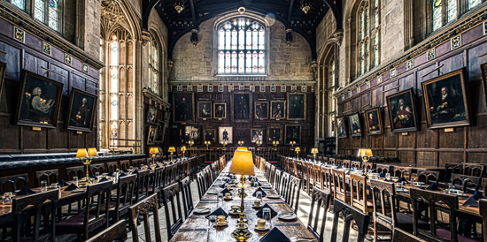
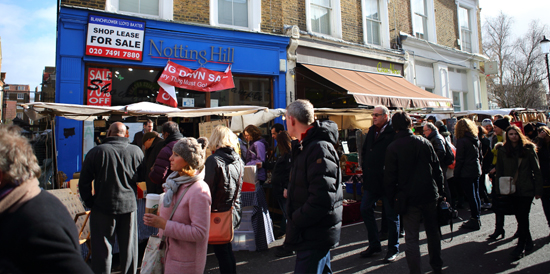

《神探夏洛克》Sherlock Holmes
随着2013年初上映的《007大破天幕危机》 到如今红极一时的英剧《神探夏洛克》，伦敦这座城市已深深烙印在观众们的脑海中 ，而捷豹汽车也成为英雄们惩恶扬善、伸张正义时的首选座驾。你甚至可以亲自去夏洛克住过的贝克街（Baker Street）看看，在福尔摩斯博物馆探寻大侦探的行踪。
牛津大学University of Oxford
牛津大学享有世界声誉，它在英国社会和高等教育系统中具有极其重要的地位，有着世界性的影响，英国和世界很多的青年学子们都以进牛津大学深造作为理想。牛津大学也是世界上现存第二古老的高等教育机构。因各种因素而获评为是世上一流及最著名的学府之一。总之它是一个诞生了无数英国最具创造力人才的大学和一系列全球票房大卖的魔幻题材电影的魔法大学，全球票房大卖的电影《哈利波特》的取景地之一，也是伦敦自驾游的必经之地。
诺丁山Notting Hill
位于伦敦西郊，电影《诺丁山》外景地，是多元文化的特别融合，富人与穷人、葡萄牙人和牙买加人与英国人共同生活在一起，是来自不同世界的人相遇并共存的理想之地。英国人的创造力也得源于多元文化的特别融合。电影《诺丁山》上映发行后，这个地区更成为伦敦的着名景点，一年四季游客络绎不尽。每年8月，诺丁山都会举行为期3天的诺丁山嘉年华，每年都吸引着150多万的游客前来狂欢，其规模仅次于巴西里约热内卢的狂欢节。诺丁山还是世界最有名、名气最大的古董市集。每逢周六，售卖古董银器、家具、瓷器、珠宝首饰、钟表、老相机、乐器、皮件、油画的小摊都聚集于此，来自世界各地的游客也会前来“淘宝”一番。
《007：大破天幕杀机》Skyfall
不经意间，皮尔斯·布鲁斯南扮演的詹姆斯·邦德已经告别大银幕6年了。丹尼尔·克雷格也即将在他的第三部007系列电影《007：大破天幕危机》里继续大展身手。影片的上映恰逢007系列诞生50周年。第六代007在《皇家赌场》中出场，恰恰是007系列电影在情节上向传统回归的一个标志。《皇家赌场》是佛莱明爵士的第一部007小说，于是我们在电影中看到的007只是一个刚刚被提升的王牌特工，MI6需要他用自己的实力证明这次升职是正确的。但与以往每部007电影都有不同的对手的设定来看，从《皇家赌场》到《天幕杀机》，007开始面对的是同一个犯罪组织“量子”，而007也在和这个组织的对抗中不断成长，这也是第六代007电影情节上的突破。观众们看到的不再是一个英勇无敌所向披靡的模式化特工形象，而是一个也会犯错，时而自大的有血有肉的007。
《哈利·波特》Harry Potter
英国作家J·K·罗琳的魔幻文学系列小说，共7集，描写主角哈利·波特在霍格沃茨7年学习生活中的冒险故事；该系列被翻译成74种语言，所有版本的总销售量逾5亿本（2008年），名列世界上最畅销小说之列。简体中文版由中国人民文学出版社发行，繁体中文版由皇冠出版社出版。美国华纳兄弟电影公司把这7集小说改拍成8部电影，前6集各一部，而第七集分成上下两部。哈利·波特电影系列是全球史上最卖座的电影系列，总票房收入达76亿美元。
《傲慢与偏见》 Pride & Prejudice
珍奥斯汀的经典爱情小说《傲慢与偏见》广受世人喜爱，这部充满浪漫爱情、幽默对白以及感人故事的经典小说，在经过65年的漫长等待之后，终于再度搬上大银幕。《傲慢与偏见》一片完全在英国实地拍摄，以忠于原著小说的拍摄手法让这个经典的爱情故事重现大银幕。
《国王的演讲》The King's Speech
《国王的演讲》是由汤姆•霍珀指导，科林•费斯担当主演的英国电影，整部电影以叙述故事的形式，讲述了英国女王伊丽莎白二世的父亲乔治六世国王的故事。本片于第35届多伦多电影节获得了最高荣誉——观众选择奖。在2011年第83届奥斯卡提名名单上，《国王的演讲》获得12项提名，并最终拿到最佳影片、最佳导演、最佳男主角、最佳原创剧本四项大奖。科林•费斯凭借本片获得金球奖最佳戏剧片男主角。影片还获得金球奖、美国制片人公会、导演公会和影视演员公会奖等多项提名和奖项。